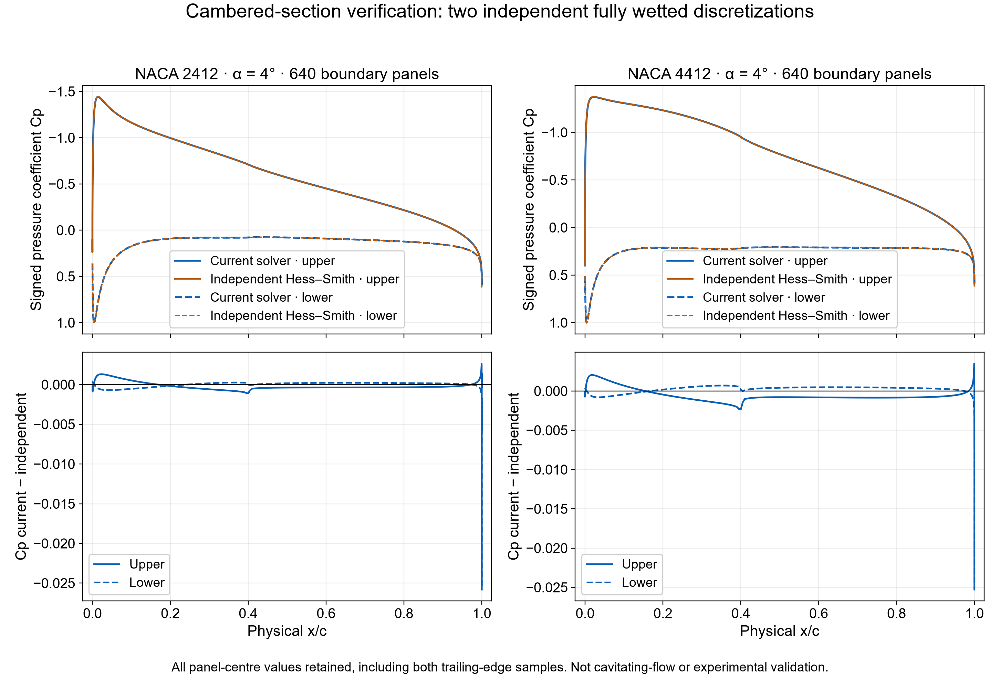
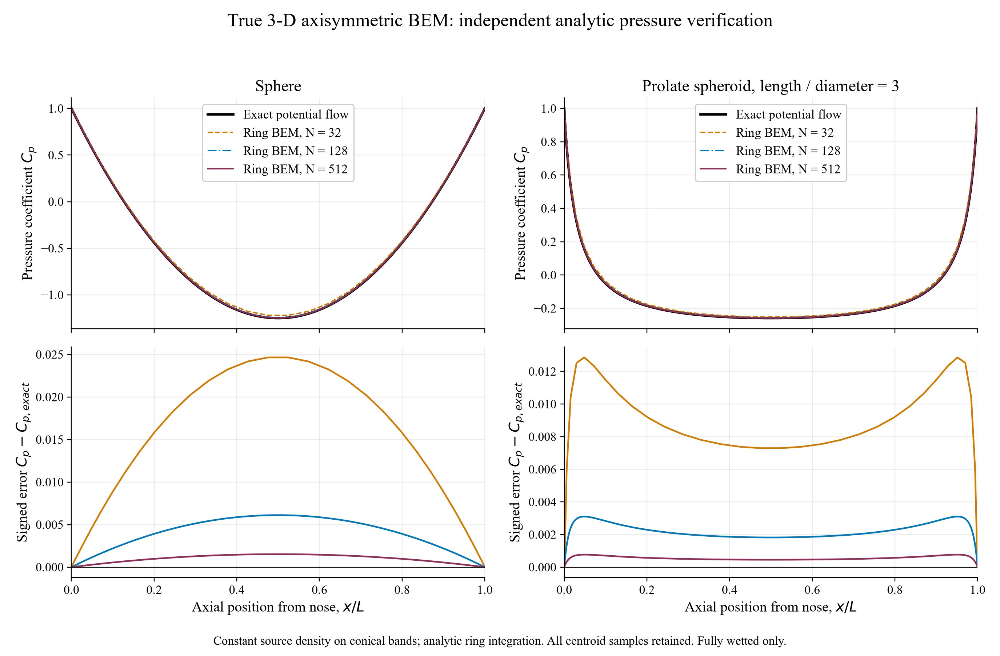
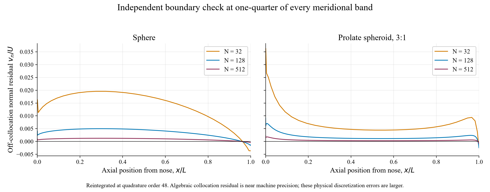
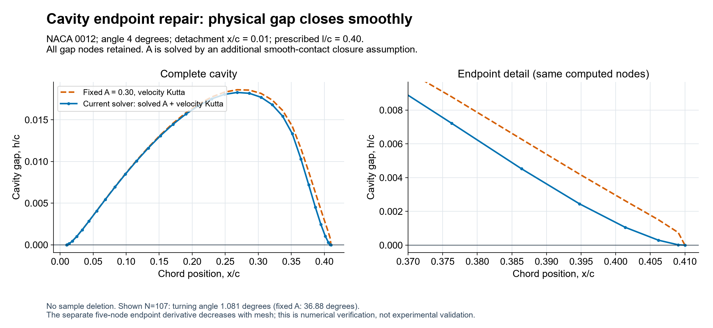
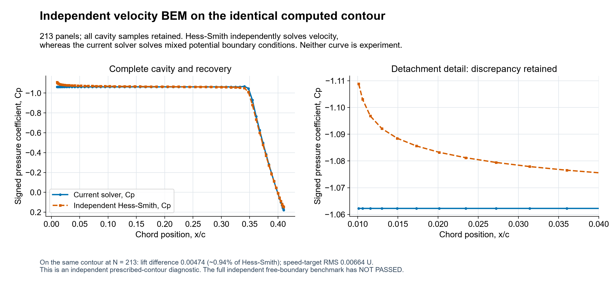
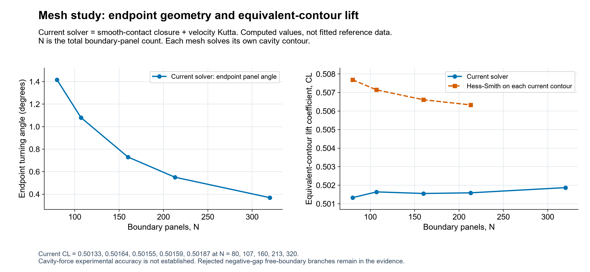

Hydrofoil Cavitation Lab 0.3.0
Geometry extensions and independent checks
Research model: physical cavitation validation has not passed. The endpoint and trailing-edge numerical conditions have been repaired. A matched experimental benchmark and an admitted independent free-boundary solution are still required. These results are not a three-dimensional cavitating-wing analysis.
Current solver identifies the implementation used for each recorded test. The 2D path uses smooth-contact recovery selection plus velocity Kutta; its symmetric-foil equations are unchanged from 0.2.1. The separate 3D path uses axisymmetric source-ring BEM. “Independent Hess–Smith” is a separate 2D velocity-source/vortex discretization; an “exact” curve is an analytical solution. Neither means experimental data.
Cambered airfoil sections
Four-digit NACA mean-line geometry with normal thickness offsets is now supported. The numerical check below uses fully wetted NACA2412 and NACA4412, with both methods solving the identical prescribed contour. The first and last panel values remain visible.

The NACA2412 cavity example at α4°, detachment x/c0.01 and length0.40c is numerically admitted: at 107 boundary panels, σ=1.16462 and equivalent-contour CL=0.74015. NACA4412 with the same closure settings is rejected because its cavity intersects the original foil. Changing airfoil geometry does not guarantee an admissible cavity branch. Geometry, backward-compatibility and cavity checks; NACA2412 result.
True three-dimensional axisymmetric flow
Fully wetted flow and an inception indicator only. The sphere and prolate spheroid are surfaces of revolution integrated as three-dimensional source rings. Their computed pressure is compared with independent analytical potential-flow solutions; the exact values do not enter the boundary solve. A developed axisymmetric cavity has not been implemented. The exact curves are evaluated at the corresponding analytic meridional midpoint parameter; the numerical body uses conical bands.


The Bernoulli criterion compares σ=(p∞−pv)/(½ρU²) with −min Cp of the wet solution. A wet-flow pressure below vapour pressure indicates that this wet solution is no longer physically sufficient there; it is not relabelled as a solved cavity. Viscosity, nuclei and tunnel effects are not included. Equations, signs, self-panel quadrature and limitations.
The axisymmetric extension is informed by Alavi & Roohi, Cavitation review Part I (2026). Its disk/sphere free-cavity comparisons require matched detachment, closure and tunnel conditions; they are not used as experimental validation of this wet-flow module.
2D symmetric-cavity numerical repair
What changed
The old fixed recovery attenuation could close the cavity height while leaving a growing endpoint corner. The current model solves attenuation A with a physical-gap tangent-contact equation. An independent wake-strength unknown and a velocity Kutta row also replace the default potential-jump approximation. Historical fixed-A/Morino calculations remain available for old case files.



Evidence and limits
| Check | Actual result | Meaning |
|---|---|---|
| Exact noncavitating Joukowski flow, 640 panels | CL absolute error 0.000388; all-panel Cp RMS 0.000289 | Velocity-condition numerical verification; raw results |
| Independent velocity solver on identical cavity contour, 213 panels | CL 0.50159 versus 0.50633; difference about 0.94% | Cross-discretization diagnostic; all cavity samples |
| Independent full free-boundary cavity solve | NOT PASSED: converged negative-gap branch rejected | No physical cavity validation; failed branch retained |
| Acosta thin-flat-plate limit | NOT PASSED | Separate sharp-leading-edge asymptotic benchmark; recorded failures |
| Experimental cavity pressure, shape and force | Not performed | No experimental accuracy claim |
| 13 one-factor input cases, 107 panels | 10 numerically admitted; 3 rejected | Sampled domain only; inputs and complete gaps |
All final solutions must pass the original nonintersection and equation-convergence checks plus the new endpoint condition. A small residual cannot turn a negative cavity gap into an accepted solution. Pressure-reconstruction differences near the mixed-boundary junctions remain visible in the result table.
The independent free-boundary solve's negative-gap result does not prove that a positive branch cannot exist. It does mean that this independent validation gate remains open. Cavitation drag, re-entrant-jet dynamics, shedding, collapse, viscosity and structural load transfer are outside this prototype.
Reproduce
Run verify.cjs, test-smooth-closure.cjs, test-velocity-kutta.cjs and ui-smoke.cjs from the validation folder with Node.js. The last is a controller/DOM test; it does not claim interactive Chrome or Firefox acceptance. Plot sources and JSON data are provided alongside the figures.
Method sources: Kinnas–Fine (1993); Kinnas chapter 9; Krishnaswamy thesis, sections 2.3 and 3.3. The smooth-contact selection is an additional model assumption, not a claim to reproduce PCPAN.